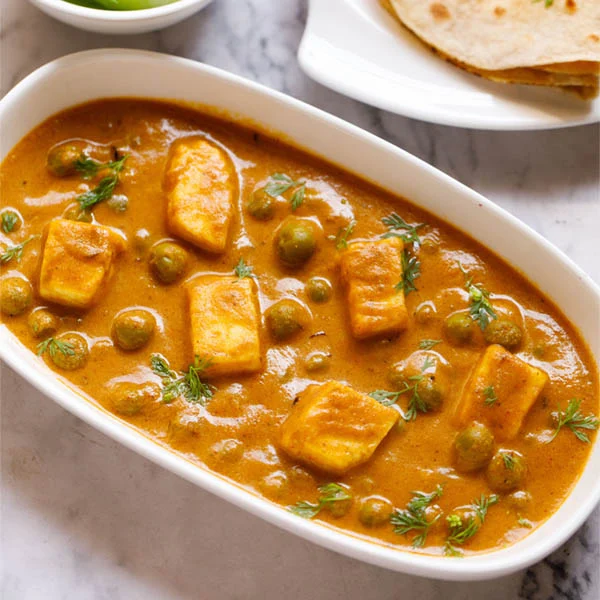

Ingredients

- 500g of paneer cubes (fry in ghee or add last)
- 2 medium-sized onions (finely chopped)
- 2 medium-sized tomatoes
- 1 big bowl of peas
- Chilis
- Ginger
- Garlic
- 3 tbsp Dhana Jeeru (coriander-cumin powder)
- 3 tsp Garam Masala
- 1.5 tsp haldi (turmeric)
- 1 pinch cumin seeds
- Salt
Instructions
- Heat oil in a pan and add cumin seeds; once it splutters add onions.
- When it turns golden brown, add chili, garlic, ginger, and all the spices; fry for 5 more mins.
- When oil separates add tomatoes and stir on high heat for a few mins.
- After 5 minutes of simmering the mixture, add 4 small glasses of water and simmer.
- Add peas, mix and simmer with lid partially on for 20 mins, stir occasionally.
- Add paneer and let it simmer till it absorbs some masala flavors.